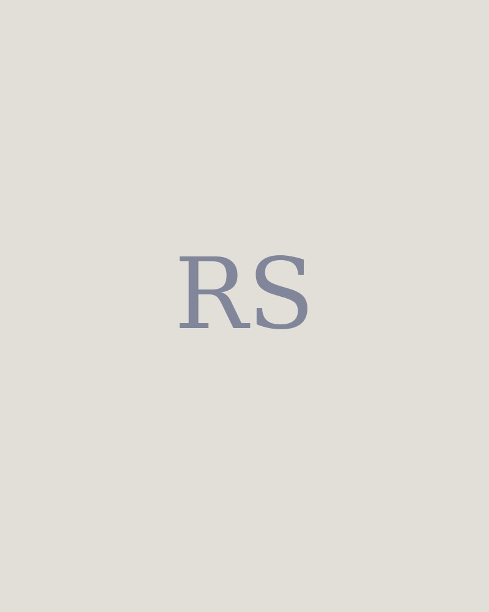

دیتا ساینتیست · پژوهش بالینی · برگامو، ایتالیا
رسول سامعی
در مؤسسه ماریو نگری روی دادههای مراقبتهای ویژه کار میکنم؛ بیشتر وقتم صرف این میشود که پایگاههای داده بالینی پراکنده را آنقدر سر و سامان بدهم که بشود از آنها سؤالی پرسید. دنبال یک موقعیت دکتری یا کار پژوهشی در حوزه دادههای سلامت هستم.

درباره
دیتا ساینتیست هستم و در پژوهش بالینی کار میکنم. از نوامبر ۲۰۲۴ در مؤسسه تحقیقات داروشناسی ماریو نگری در رانیکا هستم. بیشتر کارم داده مراقبتهای ویژه است: پایگاههای داده بالینی پراکنده را یکدست میکنم، جدولهای تحلیلیای را میسازم که مطالعههای بقیه روی آنها اجرا میشود، و آمارش را هم خودم انجام میدهم.
یک داشبورد با دستیار مدل زبانی ساختم تا پژوهشگرهای اینجا بتوانند برای کار خودشان به زبان ساده از دادههای مطالعه پرسوجو کنند. جدا از آن، روی یک پایاننامه دستیاری در دانشگاه بولونیا، یک کاربرگ استخراج بدون کدنویسی ساختم که پزشک توانست تحلیل آیسییو را بدون پیشینه مدیریت داده و بدون واسطه من اجرا کند.
بخش زیادی از باقی کار، تشخیص این است که داده واقعاً تا کجا را پشتیبانی میکند. این را کنار پزشکها و آماردانها یاد گرفتم.
پیش از ماریو نگری، شش ماه در بریتانیا در The Openwork Partnership بودم، روی تشخیص ناهنجاری در دادههای مشاوره مالی تحت نظارت. پیش از آن هم دستیار آموزشی یادگیری ماشین در دانشگاه برگامو بودم. ایرانیام و ساکن برگامو.
- ۳مقاله داوریشده
- ۹۰۰+خط SQL در یک پایپلاین BigQuery
- ۲۸+شاخص کلیدی کسبوکار که تعریف و اعتبارسنجی کردم
- ۱رتبه اول استتهکاتون برگامو ۲۰۲۲، با تیمم
پژوهش
روی نمرههای شدت بیماری، کالیبراسیون مدل و تحلیل طولی کار میکنم. اما اول باید کسی پایگاههای داده بالینی چندمرکزی را آنقدر قابل مقایسه کند که اصلاً بشود سؤالی از آنها پرسید، و بیشتر وقت من همانجا میرود. تا حالا این یعنی دادههای GiViTI و MIMIC.
-
۲۰۲۵
Development and Validation of the Sequential Organ Failure Assessment (SOFA)-2 Score
JAMA, 334(23): 2090–2103
نویسنده همکار. استخراج و پردازش داده از پایگاه بالینی MargheritaTre (GiViTI)، تحلیل آماری، بازبینی مقاله.
-
۲۰۲۵
Anomaly Detection in Financial Advisory Services: A Machine Learning Approach for Mortgage Conduct of Business Advisers
ICSEM 2025
تشخیص ناهنجاری بدونناظر روی دادههای رفتار مشاوره وام مسکن تحت نظارت، ساختهشده در Azure Machine Learning برای بازبینی انطباق. برگرفته از پایاننامه کارشناسی ارشدم.
-
۲۰۲۵
Assessing the Efficacy of a Sequential General Variational Mode Decomposition-Based Combination Model for US Wind Power Forecasting
Modeling Earth Systems and Environment
مدل ترکیبی مبتنی بر تجزیه برای پیشبینی سری زمانی توان بادی.
کارها
-
یک جدول معتبر از یک پایگاه داده پراکنده آیسییو
حدود ۹۰۰ خط SQL روی Google BigQuery که یک پایگاه داده چندجدولی و بسیار پراکنده مراقبتهای ویژه را به یک جدول تحلیلی معتبر تبدیل میکند.
حالا تیمهای دیگر مؤسسه و پژوهشگرهای بیرونی از آن بهعنوان یک منبع داده استاندارد استفاده میکنند. خودکار کردن پردازش و گزارشگیری دورهای حول آن، کار دستی چند پروژه را کم کرد.
BigQuery · SQL · Python · R
-
نمره SOFA-2، منتشرشده در JAMA
استخراج و پردازش داده از پایگاه MargheritaTre (GiViTI)، تحلیل آماری و بازبینی مقاله برای نسخه بهروزشده نمره ارزیابی نارسایی اندام.
نویسنده همکار. مطالعه به شکل یک همکاری بینالمللی بزرگ میان چند مؤسسه انجام شد.
نمرههای شدت بیماری · کالیبراسیون مدل · R · SQL
-
داشبوردی که پژوهشگر میتواند مستقیم از آن سؤال بپرسد
یک داشبورد تحلیلی تعاملی با دستیار مدل زبانی، تا پژوهشگرها بهجای اینکه از کسی بخواهند برایشان کوئری بنویسد، خودشان به زبان ساده دادههای مطالعه را بکاوند.
کسانی در مؤسسه که SQL نمینویسند، در کار روزمرهشان از آن استفاده میکنند.
Python · LangChain · SQL
-
مهندسی داده برای یک مطالعه تغذیه در آیسییو
مهندس داده روی یک پایاننامه دستیاری بیهوشی و مراقبتهای ویژه، درباره مدیریت تغذیهدرمانی در بیماران بدحال آیسییو.
یک کاربرگ استخراج بدون کدنویسی ساختم تا تحلیل مستقیم اجرا شود، بدون پیشینه مدیریت داده و بدون واسطه من.
استخراج داده · داده آیسییو · SQL
-
تشخیص ناهنجاری برای مشاوره مالی تحت نظارت
یک سامانه تشخیص ناهنجاری بدونناظر در Azure Machine Learning که الگوهای نامتعارف را در دادههای رفتار مشاوره وام مسکن برای بازبینی انطباق بیرون میکشد. کنار آن، بیش از ۲۸ شاخص کلیدی کسبوکار تعریف، محاسبه و اعتبارسنجی شد و از طریق داشبوردهای Power BI به ناظران ارشد رسید.
مدل به تحول واحد نظارت در شرکت کمک کرد و روشش در ICSEM 2025 منتشر شد. پایپلاینهایی هم با Azure Python SDK و Spark SQL ساختم، و با یکی از همکارها روی تبدیل برنامههای قدیمی COBOL به سرویسهای تحت وب و آوردن هوش مصنوعی به چند پروژه کار کردم.
Azure ML · Python · Spark SQL · Power BI
-
Financial Advisor، یک سامانه تصمیمگیری متنباز
یک سامانه محلی که تصمیمهای مالی خانوار را در برابر شواهد تاریخدار از ۱۴ منبع عمومی، یک سیاست سرمایهگذاری مکتوب، و دروازههایی میسنجد که وقتی شواهد کم است سقف امتیاز را پایین میآورند. ادعایی که سه منبع مستقل و تازه پشتش نباشد، بهجای اینکه به «بله» گرد شود، نامعلوم میماند.
پایتون، فقط کتابخانه استاندارد، ۵۵۹ تست. متنباز، با قرارداد ارائهدهنده مستندشده تا کس دیگری بتواند منبع داده یا حوزه قضایی تازهای اضافه کند. مرور پروژه (انگلیسی) · مخزن کد
Python · Public APIs · Claude Code
-
پروژههای یادگیری
رکوردهای HL7 FHIR R4 نگاشتشده به جدولهای استیجینگ به سبک OMOP روی Databricks. یک پایپلاین NLP در spaCy که خروجیاش به طبقهبندهای XGBoost برای پیشبینی پیامد میرسد. یک دستیار پرسشوپاسخ مبتنی بر بازیابی روی یک مجموعه سند خصوصی، ساختهشده با LangChain و pgvector، که گزارش رویداد نگه میدارد تا هر جواب به منبع خودش برگردد.
اینها را ساختم که خود این ابزارها را یاد بگیرم، نه برای مطالعه یا مشتری. هیچکدام جایی در محیط عملیاتی اجرا نمیشود. اینجا هستند چون زمینیاند که میخواهم بعد رویش کار کنم.
Databricks · spaCy · XGBoost · LangChain · pgvector · FastAPI · Docker · MLflow
مسیر
- ۲۰۲۴ تا امروزدیتا ساینتیست، مؤسسه تحقیقات داروشناسی ماریو نگری، رانیکا
- ۲۰۲۳ – ۲۰۲۴دیتا ساینتیست، کارآموزی ششماهه، The Openwork Partnership، سویندون، بریتانیا
- ۲۰۲۱ – ۲۰۲۴کارشناسی ارشد اقتصاد و تحلیل داده، دانشگاه برگامو. دستیار آموزشی درس یادگیری ماشین.
- ۲۰۲۲رتبه اول با تیمم، استتهکاتون برگامو (Python, R, SAS)
- ۲۰۱۵کارشناسی مدیریت بازرگانی، دانشگاه آزاد اسلامی نیشابور
ابزارها
- زبانهای برنامهنویسی
- Python، R، SQL / Spark SQL
- آمار
- آزمون فرض، مدلسازی رگرسیون، تحلیل طولی و سری زمانی، تحلیل چندمتغیره
- یادگیری ماشین
- روشهای باناظر و بدونناظر، تشخیص ناهنجاری، خوشهبندی، مهندسی ویژگی، پردازش زبان طبیعی
- ابر و داده
- Google BigQuery، Azure ML، Azure Synapse، Databricks، Power BI
- استقرار مدل
- MLflow، FastAPI، Docker، Git، LangChain، Claude Code
- داده بالینی
- GiViTI / MargheritaTre، MIMIC، HL7 FHIR R4، OMOP
- زبان
- فارسی (زبان مادری)، انگلیسی (حرفهای، آیلتس ۷.۵)، ایتالیایی و آلمانی (مقدماتی)
در تماس باشیم.
برای نقشهای پژوهشی و صنعتی در سراسر اروپا و موقعیتهای دکتری در حوزه دادههای سلامت آمادهام.
rasoul@rasoulsamei.com